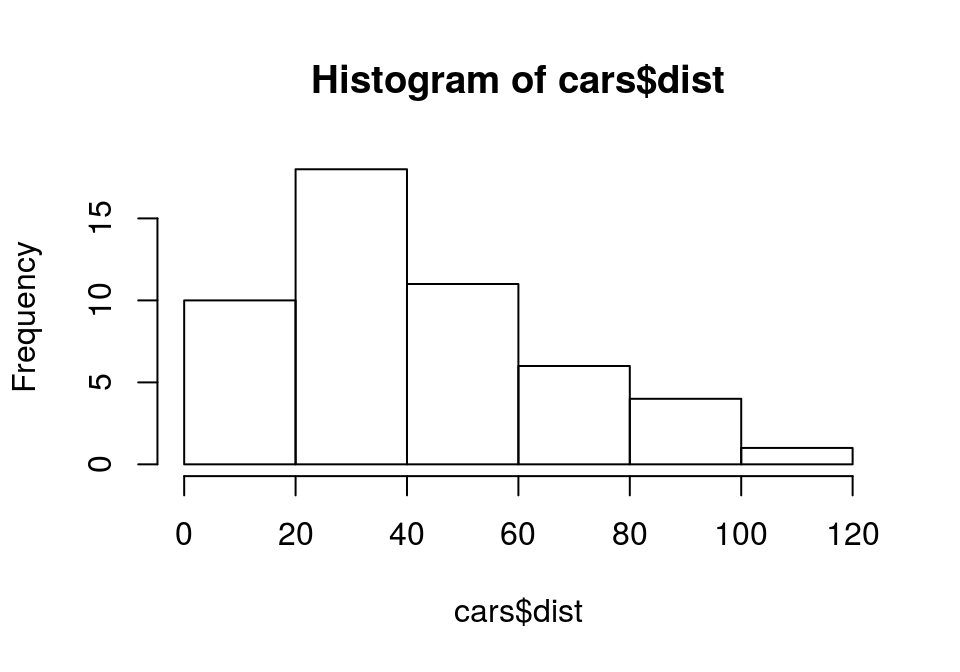
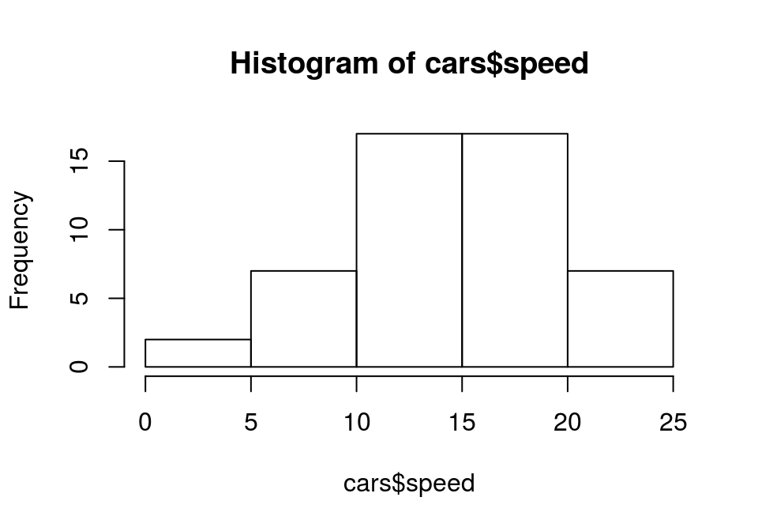

2017-05-18 21:02:59
一个外行拿到资料后首先会问的问题:
数据量多大? 平均多少？最大/最小是多少？ 每个月分别多少？ …
> mean(cars$speed) [1] 15.4
> median(cars$speed) [1] 15
> quantile(cars$speed, c(0, 0.05, 0.5, 0.95, 1)) 0% 5% 50% 95% 100% 4 7 15 24 25
# 构建一个S3泛函数calcMode，调用通用方法"calcMode"
> calcMode <- function(x) UseMethod("calcMode")
> calcMode.default <- function(x) max(unique(table(x)))
> calcMode.list <- function(x) sapply(x, function(v) max(unique(table(v))))
> calcMode.data.frame <- calcMode.list
> calcMode(cars)
speed dist
5 4
> calcMode(cars$speed)
[1] 5
> sd(cars$speed) [1] 5.287644
> var(cars$speed) [1] 27.95918
> range(cars$speed) [1] 4 25
summary函数> summary(cars$speed)
Min. 1st Qu. Median Mean 3rd Qu. Max.
4.0 12.0 15.0 15.4 19.0 25.0
Hmisc包的describe函数(更详尽)> Hmisc::describe(cars$speed)
cars$speed
n missing distinct Info Mean Gmd .05 .10 .25 .50 .75 .90 .95
50 0 19 0.996 15.4 6.077 7.0 8.9 12.0 15.0 19.0 23.1 24.0
Value 4 7 8 9 10 11 12 13 14 15 16 17 18 19 ...
Frequency 2 2 1 1 3 2 4 4 4 3 2 3 4 3 ...
Proportion 0.04 0.04 0.02 0.02 0.06 0.04 0.08 0.08 0.08 0.06 0.04 0.06 0.08 0.06 ...
e1071包> e1071::skewness(cars$dist) [1] 0.7591268 # >0，右偏
e1071包> e1071::kurtosis(cars$speed) [1] -0.6730924 # <0，峰不太陡峭(较正态分布更缓)
hist()hist(cars$dist)

hist(cars$speed)

table和prop.table函数> table(mtcars$gear)
3 4 5
15 12 5
> prop.table(table(mtcars$gear))
3 4 5
0.46875 0.37500 0.15625
> table(mtcars[,c("am", "carb")])
carb
am 1 2 3 4 6 8
0 3 6 3 7 0 0
1 4 4 0 3 1 1
ftable函数> ftable(mtcars[, c("gear", "am", "vs")], row.vars="gear", col.vars=c("am", "vs"))
am 0 1
vs 0 1 0 1
gear
3 12 3 0 0
4 0 4 2 6
5 0 0 4 1
> ftable(Titanic, row.vars=1, col.vars=c(2,4))
# 如果是ftable(as.data.frame(Titanic), row.vars=1, col.vars=c(2,4))呢?
Sex Male Female
Survived No Yes No Yes
Class
1st 118 62 4 141
2nd 154 25 13 93
3rd 422 88 106 90
Crew 670 192 3 20
xtabs函数xtabs交叉，as.data.frame.table还原> xtabs(Freq ~ Gender + Admit, as.data.frame(UCBAdmissions))
Admit
Gender Admitted Rejected
Male 1198 1493
Female 557 1278
> xtabs(cbind(ncases, ncontrols) ~ agegp, data = esoph)
agegp ncases ncontrols
25-34 1 116
35-44 9 199
45-54 46 213
55-64 76 242
65-74 55 161
75+ 13 44
> as.data.frame.table(xtabs(Freq ~ Gender + Admit, as.data.frame(UCBAdmissions))) Gender Admit Freq 1 Male Admitted 1198 2 Female Admitted 557 3 Male Rejected 1493 4 Female Rejected 1278
rowSums, rowMeans> m <- xtabs(Freq ~ Gender + Admit, as.data.frame(UCBAdmissions)) > rowSums(m) Male Female 2691 1835 > rowMeans(m) Male Female 1345.5 917.5
colSums, colMeans> colSums(m)
Admitted Rejected
1755 2771
> colMeans(m)
Admitted Rejected
877.5 1385.5
cumsum> cumsum(1:10) [1] 1 3 6 10 15 21 28 36 45 55
> t1 <- ftable(mtcars[, c("gear", "vs", "am")], row.vars=1:2, col.vars=3)
> t1
am 0 1
gear vs
3 0 12 0
1 3 0
4 0 0 2
1 4 6
5 0 0 4
1 0 1
> t2 <- prop.table(t1)
> t2
am 0 1
gear vs
3 0 0.37500 0.00000
1 0.09375 0.00000
4 0 0.00000 0.06250
1 0.12500 0.18750
5 0 0.00000 0.12500
1 0.00000 0.03125
> t3 <- cbind(t1, t2) > t3 <- t3[, c(seq(1, 4, by=2), seq(2, 4, by=2))]
> t3 <- structure(t3, class='ftable', row.vars=attr(t1, "row.vars"),
+ col.vars=attr(t1, "col.vars"))
> attr(t3, 'col.vars')$stat <- c("Freq", "Pct")
> t3
am 0 1
stat Freq Pct Freq Pct
gear vs
3 0 12.00000 0.37500 0.00000 0.00000
1 3.00000 0.09375 0.00000 0.00000
4 0 0.00000 0.00000 2.00000 0.06250
1 4.00000 0.12500 6.00000 0.18750
5 0 0.00000 0.00000 4.00000 0.12500
1 0.00000 0.00000 1.00000 0.03125
dcast> t4 <- data.table::dcast(mtcars, gear+vs ~ am, fun=length, value.var="am",
+ margins=c("am", "gear")) # 获得频数统计
> t4[, c("%_0", "%_1")] <- rbind(prop.table(t4[1:6, 3:4]),
+ prop.table(t4[7, 3:4])) # 获得频率统计
> t4[, "%_all"] <- rowSums(t4[, 6:7]) # 计算合计
> t4[, 6:8] <- sapply(t4[,6:8], function(v) {
+ sprintf("%3.2f%%", 100*v)}) # 格式转换(百分比)
> t4
gear vs 0 1 (all) %_0 %_1 %_all
1 3 0 12 0 12 37.50% 0.00% 37.50%
2 3 1 3 0 3 9.38% 0.00% 9.38%
3 4 0 0 2 2 0.00% 6.25% 6.25%
4 4 1 4 6 10 12.50% 18.75% 31.25%
5 5 0 0 4 4 0.00% 12.50% 12.50%
6 5 1 0 1 1 0.00% 3.12% 3.12%
7 (all) (all) 19 13 32 59.38% 40.62% 100.00%
melt和重铸cast> as.data.frame(t2) gear vs am Freq 1 3 0 0 0.37500 2 4 0 0 0.00000 3 5 0 0 0.00000 4 3 1 0 0.09375 ... 9 5 0 1 0.12500 10 3 1 1 0.00000 11 4 1 1 0.18750 12 5 1 1 0.03125
Thank you!